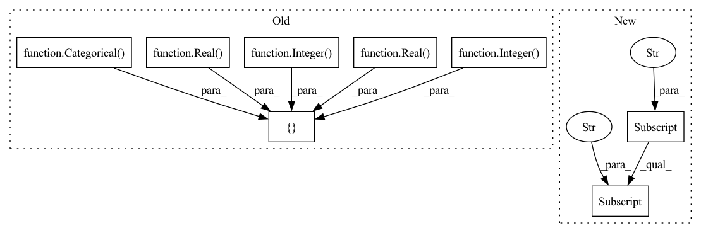

Pattern ID :2143

Before Change
// https://catboost.ai/docs/concepts/python-reference_parameters-list.html
self.path = "catboost.CatBoostRegressor"
self.param_space = [
// maximum number of trees that can be built
Integer(low=500, high=5000, name="iterations", num_samples=self.num_samples),
// Used for reducing the gradient step.
Real(low=0.0001, high=0.5, prior="log", name="learning_rate", num_samples=self.num_samples),
// Coefficient at the L2 regularization term of the cost function.
Real(low=0.5, high=5.0, name="l2_leaf_reg", num_samples=self.num_samples),
// arger the value, the smaller the model size.
Real(low=0.1, high=10, name="model_size_reg", num_samples=self.num_samples),
// percentage of features to use at each split selection, when features are selected over again at random.
Real(low=0.1, high=0.95, name="rsm", num_samples=self.num_samples),
// number of splits for numerical features
Integer(low=32, high=1032, name="border_count", num_samples=self.num_samples),
// The quantization mode for numerical features. The quantization mode for numerical features.
Categorical(categories=["Median", "Uniform", "UniformAndQuantiles",
"MaxLogSum", "MinEntropy", "GreedyLogSum"], name="feature_border_type")
]
self.x0 = [1000, 0.01, 3.0, 0.5, 0.5, 32, "GreedyLogSum"]
return {"model": {"CatBoostRegressor": kwargs}}
After Change
self.path = "catboost.CatBoostRegressor"
self.param_space = self.regression_space["CatBoostRegressor"]["param_space"]
self.x0 = self.regression_space["CatBoostRegressor"]["x0"]
return {"model": {"CatBoostRegressor": kwargs}}
def model_DecisionTreeRegressor(self, **kwargs):
In pattern: SUPERPATTERN
Frequency: 12
Non-data size: 8
Instances
Fragment ID: 9221884
Project Name: atrcheema/ai4water
Commit Name: ca2248db7a870da6289143d5fc5a0521b33a2a12
Time: 2021-11-29
Author: sara.rwpk@gmail.com
File Name: ai4water/experiments/_regression.py
M Class Name: MLRegressionExperiments
N Class Name: MLRegressionExperiments
M Method Name: model_CATBoostRegressor(1)
N Method Name: model_CATBoostRegressor(1)
M Parent Class: Experiments
N Parent Class: Experiments
M File Name: ai4water/experiments/_regression.py
N File Name: ai4water/experiments/_regression.py
M Start Line: 239
M End Line: 256
N Start Line: 220
N End Line: 221
'>
Before Change
def model_ElasticNetCV(self, **kwargs):
// https://scikit-learn.org/stable/modules/generated/sklearn.linear_model.ElasticNetCV.html
self.path = "sklearn.linear_model.ElasticNetCV"
self.param_space = [
Real(low=0.1, high=1.0, name="l1_ratio", num_samples=self.num_samples),
Real(low=1e-5, high=1e-2, name="eps", num_samples=self.num_samples),
Integer(low=10, high=1000, name="n_alphas", num_samples=self.num_samples),
Categorical(categories=[True, False], name="fit_intercept"),
Integer(low=500, high=5000, name="max_iter", num_samples=self.num_samples),
]
self.x0 = [0.5, 1e-3, 100, True, 1000]
return {"model": {"ElasticNetCV": kwargs}}
After Change
// https://scikit-learn.org/stable/modules/generated/sklearn.linear_model.ElasticNetCV.html
self.path = "sklearn.linear_model.ElasticNetCV"
self.param_space = self.regression_space["ElasticNetCV"]["param_space"]
self.x0 = self.regression_space["ElasticNetCV"]["x0"]
return {"model": {"ElasticNetCV": kwargs}}
'>
Fragment ID: 9221885
Project Name: atrcheema/dl4seq
Commit Name: ca2248db7a870da6289143d5fc5a0521b33a2a12
Time: 2021-11-29
Author: sara.rwpk@gmail.com
File Name: ai4water/experiments/_regression.py
M Class Name: MLRegressionExperiments
N Class Name: MLRegressionExperiments
M Method Name: model_ElasticNetCV(1)
N Method Name: model_ElasticNetCV(1)
M Parent Class: Experiments
N Parent Class: Experiments
M File Name: ai4water/experiments/_regression.py
N File Name: ai4water/experiments/_regression.py
M Start Line: 304
M End Line: 311
N Start Line: 259
N End Line: 260
'>
Before Change
// https://scikit-learn.org/stable/modules/generated/sklearn.ensemble.RandomForestRegressor.html
self.path = "sklearn.ensemble.RandomForestRegressor"
self.param_space = [
Integer(low=5, high=50, name="n_estimators", num_samples=self.num_samples),
Integer(low=3, high=30, name="max_depth", num_samples=self.num_samples),
Real(low=0.1, high=0.5, name="min_samples_split", num_samples=self.num_samples),
// Real(low=0.1, high=1.0, name="min_samples_leaf"),
Real(low=0.0, high=0.5, name="min_weight_fraction_leaf", num_samples=self.num_samples),
Categorical(categories=["auto", "sqrt", "log2"], name="max_features")
]
self.x0 = [10, 5, 0.4, // 0.2,
0.1, "auto"]
return {"model": {"RandomForestRegressor": kwargs}}
After Change
// https://scikit-learn.org/stable/modules/generated/sklearn.ensemble.RandomForestRegressor.html
self.path = "sklearn.ensemble.RandomForestRegressor"
self.param_space = self.regression_space["RandomForestRegressor"]["param_space"]
self.x0 = self.regression_space["RandomForestRegressor"]["x0"]
return {"model": {"RandomForestRegressor": kwargs}}
'>
Fragment ID: 9222030
Project Name: atrcheema/dl4seq
Commit Name: ca2248db7a870da6289143d5fc5a0521b33a2a12
Time: 2021-11-29
Author: sara.rwpk@gmail.com
File Name: ai4water/experiments/_regression.py
M Class Name: MLRegressionExperiments
N Class Name: MLRegressionExperiments
M Method Name: model_RandomForestRegressor(1)
N Method Name: model_RandomForestRegressor(1)
M Parent Class: Experiments
N Parent Class: Experiments
M File Name: ai4water/experiments/_regression.py
N File Name: ai4water/experiments/_regression.py
M Start Line: 664
M End Line: 673
N Start Line: 533
N End Line: 534
'>
Before Change
def model_LabelSpreading(self, **kwargs):
// https://scikit-learn.org/stable/modules/generated/sklearn.semi_supervised.LabelSpreading.html
self.path = "sklearn.semi_supervised.LabelSpreading"
self.param_space = [
Categorical(categories=["knn", "rbf"], name="kernel"),
Integer(low=5, high=10, name="n_neighbors", num_samples=self.num_samples),
Integer(low=10, high=100, name="max_iter", num_samples=self.num_samples),
Real(low=0.1, high=1.0, name="alpha", num_samples=self.num_samples),
Real(low=1e-6, high=1e-2, name="tol", num_samples=self.num_samples),
Integer(low=2, high=50, name="n_jobs", num_samples=self.num_samples)
]
self.x0 = ["knn", 5, 10, 0.1, 1e-4, 5]
return {"model": {"LabelSpreading": kwargs}}
After Change
self.path = "sklearn.semi_supervised.LabelSpreading"
self.param_space = self.classification_space["LabelSpreading"]["param_space"]
self.x0 = self.classification_space["LabelSpreading"]["x0"]
return {"model": {"LabelSpreading": kwargs}}
def model_LGBMClassifier(self, **kwargs):
'>
Fragment ID: 9222031
Project Name: atrcheema/dl4seq
Commit Name: ca2248db7a870da6289143d5fc5a0521b33a2a12
Time: 2021-11-29
Author: sara.rwpk@gmail.com
File Name: ai4water/experiments/_classification.py
M Class Name: MLClassificationExperiments
N Class Name: MLClassificationExperiments
M Method Name: model_LabelSpreading(1)
N Method Name: model_LabelSpreading(1)
M Parent Class: Experiments
N Parent Class: Experiments
M File Name: ai4water/experiments/_classification.py
N File Name: ai4water/experiments/_classification.py
M Start Line: 196
M End Line: 204
N Start Line: 172
N End Line: 173
'>
Before Change
def model_LGBMClassifier(self, **kwargs):
// https://lightgbm.readthedocs.io/en/latest/pythonapi/lightgbm.LGBMClassifier.html
self.path = "lightgbm.LGBMClassifier"
self.param_space = [
Categorical(categories=["gbdt", "dart", "goss", "rf"], name="boosting_type"),
Integer(low=10, high=200, name="num_leaves", num_samples=self.num_samples),
Real(low=0.0001, high=0.1, prior="log", name="learning_rate", num_samples=self.num_samples),
Real(low=10, high=100, name="min_child_samples", num_samples=self.num_samples),
Integer(low=20, high=500, name="n_estimators", num_samples=self.num_samples)
]
self.x0 = ["rf", 10, 0.001, 10, 20]
return {"model": {"LGBMClassifier": kwargs}}
After Change
self.path = "lightgbm.LGBMClassifier"
self.param_space = self.classification_space["LGBMClassifier"]["param_space"]
self.x0 = self.classification_space["LGBMClassifier"]["x0"]
return {"model": {"LGBMClassifier": kwargs}}
def model_LinearDiscriminantAnalysis(self, **kwargs):
'>
Fragment ID: 9222089
Project Name: atrcheema/dl4seq
Commit Name: ca2248db7a870da6289143d5fc5a0521b33a2a12
Time: 2021-11-29
Author: sara.rwpk@gmail.com
File Name: ai4water/experiments/_classification.py
M Class Name: MLClassificationExperiments
N Class Name: MLClassificationExperiments
M Method Name: model_LGBMClassifier(1)
N Method Name: model_LGBMClassifier(1)
M Parent Class: Experiments
N Parent Class: Experiments
M File Name: ai4water/experiments/_classification.py
N File Name: ai4water/experiments/_classification.py
M Start Line: 210
M End Line: 217
N Start Line: 181
N End Line: 182
'>
Before Change
def model_ExtraTreesClassifier(self, **kwargs):
// https://scikit-learn.org/stable/modules/generated/sklearn.ensemble.ExtraTreesClassifier.html
self.path = "sklearn.ensemble.ExtraTreesClassifier"
self.param_space = [
Integer(low=5, high=50, name="n_estimators", num_samples=self.num_samples),
Integer(low=3, high=30, name="max_depth", num_samples=self.num_samples),
Real(low=0.1, high=0.5, name="min_samples_split", num_samples=self.num_samples),
Real(low=0.0, high=0.5, name="min_weight_fraction_leaf", num_samples=self.num_samples),
Categorical(categories=["auto", "sqrt", "log2"], name="max_features")
]
self.x0 = [10, 5, 0.4, 0.1, "auto"]
return {"model": {"ExtraTreesClassifier": kwargs}}
After Change
self.path = "sklearn.ensemble.ExtraTreesClassifier"
self.param_space = self.classification_space["ExtraTreesClassifier"]["param_space"]
self.x0 = self.classification_space["ExtraTreesClassifier"]["x0"]
return {"model": {"ExtraTreesClassifier": kwargs}}
def model_KNeighborsClassifier(self, **kwargs):
'>
Fragment ID: 9222026
Project Name: atrcheema/ai4water
Commit Name: ca2248db7a870da6289143d5fc5a0521b33a2a12
Time: 2021-11-29
Author: sara.rwpk@gmail.com
File Name: ai4water/experiments/_classification.py
M Class Name: MLClassificationExperiments
N Class Name: MLClassificationExperiments
M Method Name: model_ExtraTreesClassifier(1)
N Method Name: model_ExtraTreesClassifier(1)
M Parent Class: Experiments
N Parent Class: Experiments
M File Name: ai4water/experiments/_classification.py
N File Name: ai4water/experiments/_classification.py
M Start Line: 157
M End Line: 164
N Start Line: 145
N End Line: 146